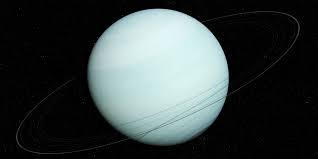

Uranus

Uranus is the seventh planet from the Sun. It has the third-largest planetary
radius and fourth-largest planetary mass in the Solar System. Uranus is similar
in composition to Neptune, and both have bulk chemical compositions which differ
from that of the larger gas giants Jupiter and Saturn. For this reason, scientists
often classify Uranus and Neptune as "ice giants" to distinguish them from the gas
giants. Uranus' atmosphere is similar to Jupiter's and Saturn's in its primary
composition of hydrogen and helium, but it contains more "ices" such as water,
ammonia, and methane, along with traces of other hydrocarbons.[15] It has the
coldest planetary atmosphere in the Solar System, with a minimum temperature
of 49 K (−224 °C; −371 °F), and has a complex, layered cloud structure with
water thought to make up the lowest clouds and methane the uppermost layer
of clouds.[15] The interior of Uranus is mainly composed of ices and rock.[14]